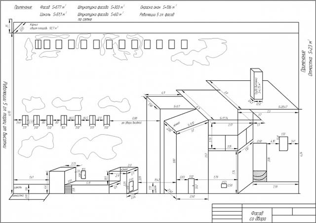
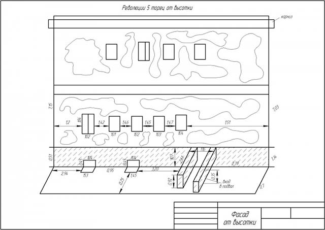
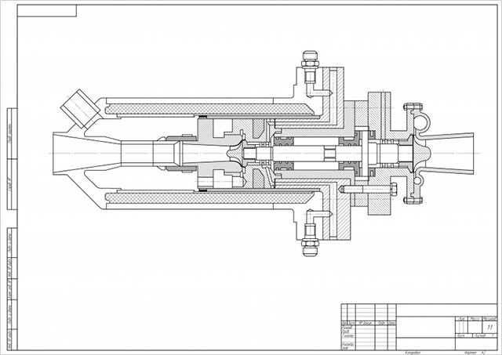
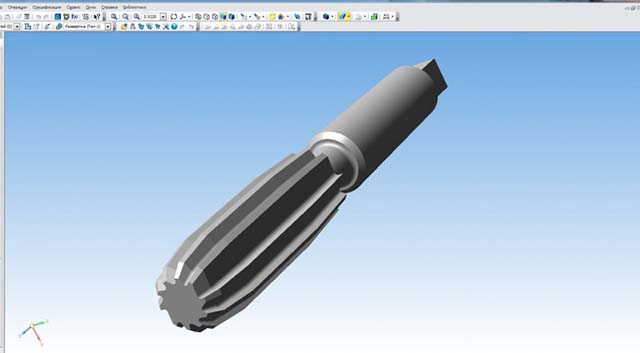
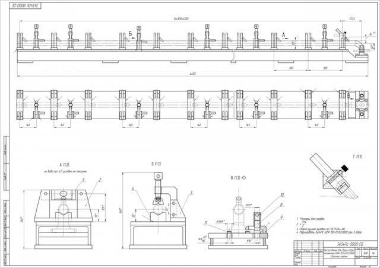
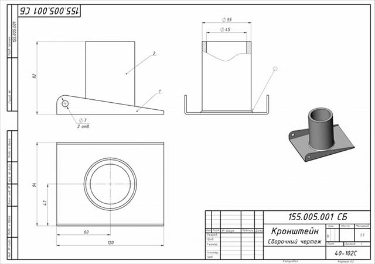

Программы для черчения на компьютере упрощают процесс создания чертежей. Чертеж в подобных приложениях рисуется гораздо быстрее, чем на реальном листе бумаге,а в случае совершения ошибки ее можно легко исправить в пару кликов.
Поэтому программы для черчения давно стали стандартом в этой области.
Но среди программных решений в области черчения также есть разница между различными приложениями. Многие из них обладают большим количеством функций, подходящих профессионалам. Другие программы могут похвастаться простым внешним видом, который отлично подойдет новичкам в черчении. В статье представлены лучшие программы для черчения, существующие на сегодняшний день.
- AutoCAD (Autodesk);
- Компас-3D (АСКОН)
- NanoCAD (Нанокад);
- SolidWorks (Солидворкс).
Программы для черчения, которые собраны в этом наборе помогут специалистам из разных направлений создавать свои проекты максимально эффективно. Архитекторы и дизайнеры смогут найти решения для проектирования домов и интерьеров. Такие гиганты в области черчения, проектирования и дизайна имеют огромное количество инструментов и образцов деталей, которые дадут возможность воплотить в жизнь практически любые идеи. Такие программы обеспечивают полуавтоматическое выполнение проектов и документации к ним.
AutoCAD
Одна из наиболее востребованных САПР как в среде профессионального проектирования, так и в кругах любителей. Компания Autodesk постоянно совершенствует черчение на компьютере в autocad, добавляя все больше возможностей. Новые версии выходят регулярно, с периодичностью в год.
Функциональные особенности
Программа для 3d черчения позволяет создавать как двухмерные проекты, так и трехмерные. При этом возможности рендера трехмерных объектов не уступает полноценным редакторам 3D графики. Функции 2D моделирования делают из AutoCAD не просто электронный кульман, но мощный инструмент для создания качественных чертежей. Программа поддерживает работу в трех форматах: DWG (закрытый для редактирования в AutoCAD), DWF (для публикации) и DXF (для работы с чертежами AutoCAD в других программах).
Достоинства и недостатки
Данная САПР имеет множество преимуществ, однако они имеют свою цену. За богатый функционал придется платить много денег. С другой стороны, имеются более дешевые версии программы с урезанным функционалом (AutoCAD LT) и бесплатная версия для использования в образовательных целях.
Компас-3D
Программа поддерживает работу со множеством наиболее распространенных форматов электронных чертежей, что позволяет эффективно сотрудничать с фирмами, пользующимися иными средами проектирования. Основой для готового чертежа служит 3D модель.
При этом данные в 2D чертеже динамически изменяются с редактированием объемной модели. На основе готового чертежа происходит составление проектной документации, которая полностью соответствует государственным стандартам. С 2008 по 2013 существовала программа для черчения на компьютере онлайн от КОМПАС.
Достоинства и недостатки
Программа наиболее распространения на территории РФ, что неудивительно, учитывая разработчиков. Есть и зарубежные локализации, но спрос на них не так велик.
Для создания чертежей микросхем и электрических цепей есть также несколько программ или приложений, например такого как ESKW (Компас). Они позволяют быстро формировать схемы из уже готовых узлов, что значительно ускоряет процесс проектирования.
NanoCAD
Софт настолько же эффективно позволяет работать и с документами, и в итоге использование этого программного пакета позволяет укомплектовать качественные чертежи даже самого сложного объекта настолько же качественным документальным сопровождением. Причем все будет оформлено абсолютно правильно (чего нельзя сказать в случае человеческого фактора), ведь весь пакет будет основываться исключительно на нормативах и требованиях, заложенных в российские ГОСТы.
Какой русский проектировщик не любит быстрой работы ? Риторический вопрос, и именно поэтому программа NanoCAD автоматизирована настолько, насколько это вообще возможно. Благодаря этому подавляющая часть проектных операций и документальной работы делается преимущественно автоматически. А это значит, что обучиться работе с приложением будет намного проще, а работать на нем - намного оптимальнее и эффективнее, чем на зарубежных программных аналогах.
Достоинства и недостатки
NanoCAD предлагает своему владельцу обширный спектр возможностей, включая автоматизацию вычислений, автозавершение команд и коррекцию их ввода, автоматическое построение сложных объектов и их фильтрацию, оперативный выбор нужного объекта – и это далеко не полный перечень и без того огромных возможностей отечественной программы для проектирования. Пакет обладает рядом особенностей, во-первых, это собственные инструменты, с помощью которых можно легко выровнять чертеж, удалить его часть или наоборот что-то добавить, а также управлять цветом, размером и т.д. Во-вторых, схожий с продуктами Autodesk интерфейс, за счет этого пользователям, ранее работавшим с АвтоКад будет легче привыкнуть к программе. И в-третьих поддержка российских стандартов, линии, шрифты, стили, масштабы, все это создано по государственным стандартам и системе проектной документации для строительства. К недостаткам, ни к преимуществам - это доступность. С одной стороны базовая версия предоставляется бесплатно, и скачать NanoCAD вы можете прямо с официального сайта. С другой, за пользование самой новой версией вам придется заплатить. Платными являются и специальные дополнения.
SolidWorks
SolidWorks — система, позволяющая осуществлять автоматизированное проектирование, подготовку производства различных изделий и детальный инженерный анализ. Прикладные модули работают на уровне единой информационной модели, что позволяет решать ряд специфических задач:
- произведение точных инженерных расчетов модели;
- анализ технологичности изделия (совокупности свойств конструкции, определяющей ее приспособленность к достижению оптимизации затрат на ее производство, эксплуатацию и ремонт);
- автоматизация документооборота с возможностью согласования различных форматов документов (до 200 типов).
Достоинства и недостатки
Каждое программное обеспечение решает ряд поставленных перед ним задач. Если сравнивать SolidWorks и другие программы для моделирования, можно выделить несколько бесспорных преимуществ «Солида»:
- идеальный вариант для трехмерного моделирования (в то время как Inventor имеет более богатый функционал для создания чертежей ); в программе можно решать прикладные задачи;
- идеально подходит для современных компьютерных проработок;
- испытать спроектированную с помощью программы деталь можно в максимально приближенных к реальным условиях, вплоть до температуры детали (такие перспективы открывает далеко не каждая программа);
- стандартный пользовательский интерфейс, который легко осваивать даже новичкам;
- может работать с различными приложениями Windows (Excel, Word).
Недостатков у программы немного:
- не такая богатая библиотека стандартных элементов, как у других программ;
- функционирует на платформе Microsoft Windows.
Заключение
Вот вы вкратце и познакомились с основными программами для черчения на компьютере. Используя их, вы легко и быстро нарисуете чертеж для любых целей, будь то курсовая работа для института или проектная документация для строящегося здания. С выполненными чертёжными работами можно ознакомиться в этом разделе.
Примеры чертежей, сделанных САПР пакетах
Чертеж фасада дома (Компас3D)

Фасад от высотки (Компас3D)

Эскиз чертежа турбины (Компас3D)

3D модель развертки (Компас3D)

Чертеж приспособления для сварки-сборки (Компас3D)

Чертеж кронштейна (SolidWorks)